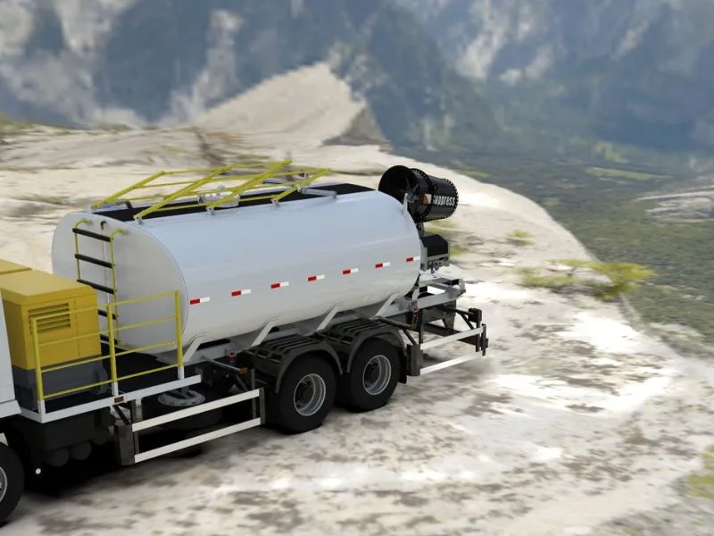

Conjunto Autônomo Móvel para Abatimento de Particulado (CAMAP)
Canhão de névoa, tanque de água e espaço para gerador em um único conjunto, com total autonomia em qualquer frente de trabalho.

A Suppress, em parceria com a Vetor Empreendimentos, apresenta o CAMAP, Conjunto Autônomo Móvel para Abatimento de Particulado, um marco no campo da supressão de poeira industrial. A solução nasceu para atender operações que demandam eficiência, mobilidade e praticidade no controle de particulado, reunindo em uma única estrutura tudo o que uma frente de trabalho precisa para operar sem depender de infraestrutura fixa. Hoje essa solução é comercializada pela Suppress como o Conjunto Móvel Semi-Autônomo, disponível tanto para venda quanto para locação.
O que caracteriza uma solução autônoma móvel
Um conjunto autônomo móvel para abatimento de particulado se diferencia de um canhão de névoa convencional por reunir, em uma única estrutura, tudo o que é necessário para operar sem depender de rede elétrica ou hidráulica externa. Três elementos formam essa combinação:
- Canhão de névoa: no caso do CAMAP, o modelo SP-55, com alcance de 60 metros (opção de 80 metros)
- Reservatório de água próprio: tanque de 6.000 litros (opção de 7.000 litros) em polietileno de alta resistência
- Fonte de energia independente: gerador cabinado e silenciado de 70 KVA, que alimenta tanto o canhão quanto os sistemas de giro e elevação
Todo esse conjunto é montado sobre uma estrutura de transporte, uma carreta com suspensão por torção nas seis rodas, freios elétricos e patolas de estabilização, o que permite rebocá-lo até o ponto de operação e estabilizá-lo em poucos minutos. É essa combinação de canhão, água, energia e estrutura de transporte em um único corpo que define o conceito de unidade autônoma móvel, em oposição aos canhões fixos instalados permanentemente sobre torres ou postes.
Cenários de uso típicos
A mobilidade do CAMAP faz sentido em situações nas quais um sistema fixo não é a melhor resposta, seja por custo, seja por não conseguir acompanhar o ritmo da operação. Os cenários mais comuns incluem:
Situações emergenciais
Quando um sistema fixo de supressão sai de operação, por falha técnica ou manutenção programada, o conjunto móvel pode ser deslocado até o ponto crítico para manter a operação em conformidade com os limites de emissão de particulado enquanto o equipamento principal é restabelecido.
Operações temporárias e sazonais
Canteiros de obra, frentes de lavra recém-abertas ou operações com prazo definido raramente justificam o investimento em um sistema fixo. O conjunto móvel atende essa demanda sem exigir obra civil ou infraestrutura permanente.
Áreas remotas sem infraestrutura
Em frentes de mineração distantes da rede elétrica ou em locais sem abastecimento de água encanado, a autonomia energética e hídrica do conjunto elimina a necessidade de estender cabos ou tubulações até o ponto de uso.
Eventos pontuais de geração de poeira
Demolições controladas, escavações específicas e outras atividades de curta duração geram picos de particulado que não justificam uma instalação fixa, mas exigem resposta imediata, exatamente o tipo de demanda para a qual o conjunto móvel foi projetado.
Mobilidade versus sistemas fixos: entendendo o trade-off
A escolha entre um sistema fixo e uma solução móvel como o CAMAP não é uma questão de qual é "melhor", mas de qual se encaixa no perfil da operação. Sistemas fixos, como os descritos em nosso artigo sobre canhões de névoa de alta vazão, oferecem cobertura permanente e contínua de uma área crítica, ideais quando o ponto de geração de poeira é sempre o mesmo, como uma britagem ou um pátio de estocagem fixo.
Já a solução móvel entrega capacidade de resposta rápida em múltiplos pontos. Uma mesma unidade pode atender hoje uma frente de lavra e, na semana seguinte, ser realocada para outra área da operação, sem necessidade de um novo projeto de instalação. Essa flexibilidade tem um custo: o conjunto precisa ser reposicionado manualmente e sua autonomia está limitada à capacidade do tanque e do gerador, diferente de um sistema fixo conectado a redes permanentes de água e energia. Para muitas operações, a resposta não é escolher um ou outro, mas combinar sistemas fixos nos pontos críticos com unidades móveis para cobrir variações da operação, tema que detalhamos em soluções personalizadas para abatimento de poeira.
Logística operacional
Por ser projetado sobre uma estrutura rebocável, o tempo de mobilização do conjunto móvel é curto: basta acoplar a carreta a um veículo de tração, deslocá-la até o ponto de uso e estabilizá-la com as patolas antes de iniciar a operação. Não há obra civil, fundação ou ligação elétrica externa a esperar.
A autonomia de operação está diretamente relacionada ao volume do reservatório de água e ao combustível disponível para o gerador, por isso o dimensionamento do tanque e da potência do gerador é definido conforme o tempo de operação contínua esperado em cada frente de trabalho. Operações com turnos mais longos podem optar pela versão de tanque ampliado (7.000 litros), enquanto frentes com reabastecimento próximo se beneficiam da configuração padrão.
Aplicações por setor
A versatilidade do conjunto autônomo móvel permite seu uso em diferentes segmentos industriais:
- Mineração: frentes de lavra temporárias, pilhas de estéril e áreas de britagem móvel, onde o ponto de geração de poeira muda com o avanço da operação
- Construção civil: canteiros de obra, demolições e movimentações de terra que não justificam infraestrutura fixa
- Eventos: atividades pontuais que demandam controle temporário de particulado em grandes áreas abertas
- Agronegócio: pátios de manejo, silos e operações sazonais de colheita e armazenamento
Em todos esses cenários, vale lembrar que o canhão de névoa atua de forma diferente de sistemas de aspersão tradicionais, uma comparação detalhada está disponível em canhão de névoa x aspersores: qual a diferença.
Operação e manutenção simplificadas
Por ser uma unidade compacta e autocontida, o conjunto móvel reduz a complexidade operacional em campo. Toda a operação, giro, elevação e acionamento do canhão, é elétrica, alimentada pelo próprio gerador embarcado, o que simplifica o treinamento das equipes e reduz a dependência de sistemas externos sujeitos a falhas. A estrutura em aço galvanizado a fogo com pintura eletrostática e a suspensão reforçada também simplificam a manutenção preventiva, já que o conjunto foi pensado para operar em condições adversas de campo sem perder desempenho.
Por meio da nebulização da névoa, as partículas de poeira em suspensão se aglomeram e se depositam de forma eficiente, sem excesso de umidade e sem desperdício de água, o mesmo princípio físico empregado em toda a linha de canhões Suppress, com alcance que varia conforme o modelo, como explicamos em qual o alcance da névoa dos canhões Suppress.
O CAMAP reúne em um único conjunto tudo o que é necessário para o abatimento de particulado em campo: canhão de névoa, reserva de água e geração de energia, pronto para se deslocar conforme a operação avança.
Conclusão
A inovação amplia as possibilidades de controle de particulado em diversos setores industriais, promovendo práticas sustentáveis e contribuindo para a preservação ambiental sem abrir mão da qualidade do ar. A Suppress fabrica equipamentos para operação sustentável, disponíveis tanto para venda quanto para locação, conheça as especificações completas do Conjunto Móvel Semi-Autônomo e avalie se essa é a solução ideal para a sua operação.
Perguntas Frequentes
Quando vale a pena optar por uma solução móvel em vez de um sistema fixo?
A solução móvel é mais indicada quando o ponto de geração de poeira muda com frequência, como em frentes de lavra, canteiros de obra ou operações sazonais, ou quando não há infraestrutura elétrica e hidráulica permanente disponível no local. Sistemas fixos seguem sendo a melhor opção para pontos críticos e contínuos de geração de particulado, como uma britagem fixa.
Que tipo de operação se beneficia mais do CAMAP?
Operações com frentes de trabalho que avançam ao longo do tempo, como mineração e construção civil, são as que mais se beneficiam, assim como situações emergenciais em que um sistema fixo está fora de operação. A possibilidade de reposicionar o equipamento sem obra civil é o principal diferencial nesses casos.
Como funciona a autonomia energética do equipamento?
O conjunto conta com um gerador cabinado e silenciado de 70 KVA embarcado na própria estrutura, que alimenta o canhão de névoa e seus sistemas de giro e elevação sem necessidade de conexão à rede elétrica externa. A autonomia de operação contínua está relacionada à capacidade do tanque de água e ao combustível disponível para o gerador, por isso o dimensionamento é avaliado conforme o tempo de operação esperado em cada frente.
Quer autonomia total no controle de poeira da sua operação?
Conheça o CAMAP e descubra como ele pode atender à sua frente de trabalho.
Solicitar Proposta